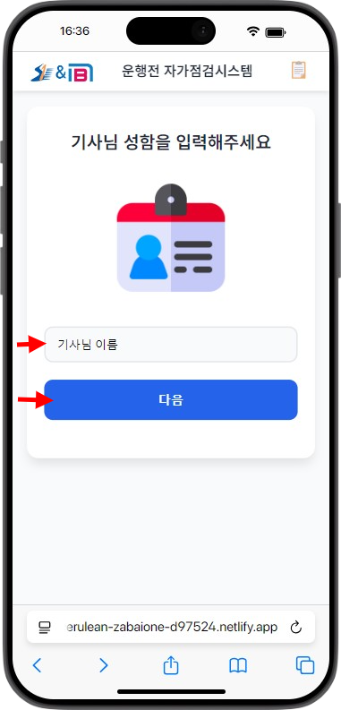
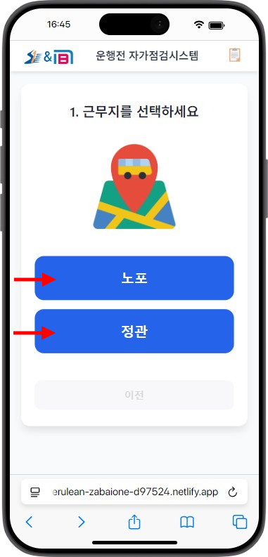
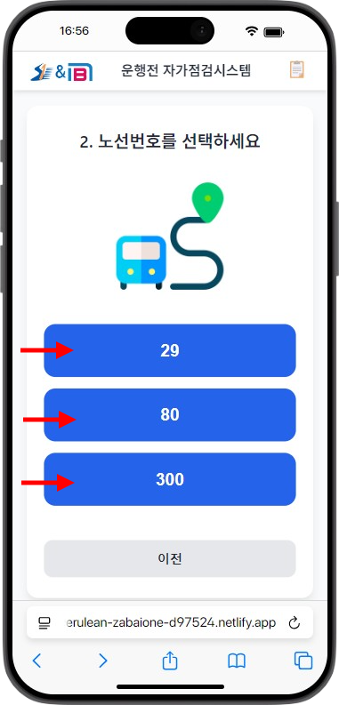
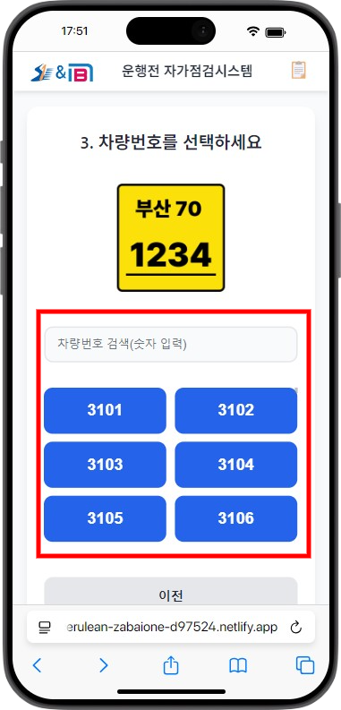
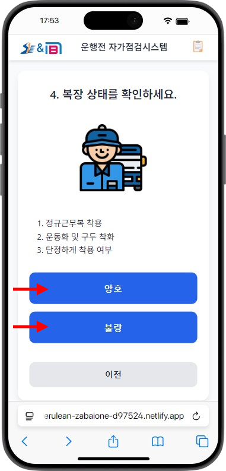
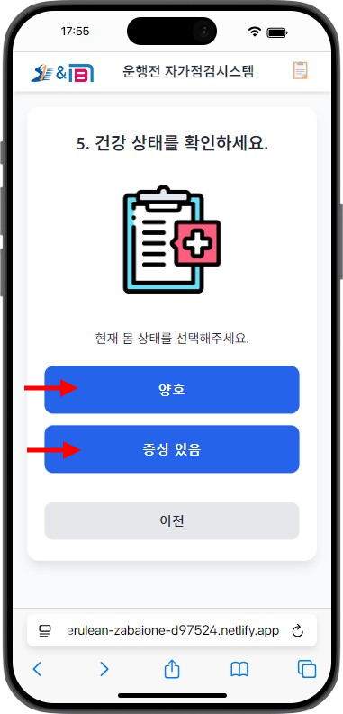
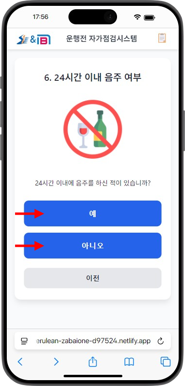

처음 사용하시는 경우 이름을 입력해주세요.
💡 한 번 입력하면 다음부터는 근무지 선택부터 시작됩니다.

오늘 근무하는 근무지를 선택해주세요.
선택 후 확인 모달이 나타나며, 확인을 누르면 다음 단계로 진행됩니다.
💡 잘못 선택하셨다면 "아니오"를 눌러 다시 선택할 수 있습니다.

오늘 운행하는 노선번호를 선택해주세요.
💡 노선번호는 근무지에 따라 다르게 표시됩니다.

오늘 운행하는 차량의 번호를 선택해주세요.
💡 차량번호는 숫자로 검색할 수 있습니다. 예: "3101" 입력 시 3101번 차량이 표시됩니다.

거울을 통해 복장 상태를 확인하고 선택해주세요.
불량을 선택하시면 불량 사유를 입력하는 화면이 나타납니다. 사유를 입력한 후 확인을 누르면 다음 단계로 진행됩니다.
💡 복장 상태는 거울을 통해 직접 확인하신 후 선택해주세요.

현재 몸 상태를 확인하고 선택해주세요.
증상 있음을 선택하시면 증상 선택 화면이 나타납니다. 몸살, 감기, 장염 중 선택하거나 "기타"를 선택하여 직접 입력할 수 있습니다.
💡 건강 상태는 안전 운행을 위해 정확하게 선택해주세요.

24시간 이내에 음주를 하셨는지 선택해주세요.
"예"를 선택하시면 경고 메시지가 나타나며, 반드시 관리자에게 문의 후 음주 측정을 진행해야 합니다.
⚠️ 음주 운전은 절대 금지입니다. 정확하게 선택해주세요.
모든 자가점검이 완료되었습니다!
💡 자가점검은 매일 운행 전에 반드시 진행해주세요.